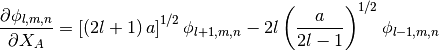
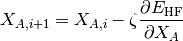
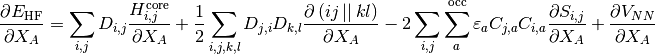
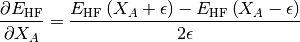

Geometry optimization¶
In this section the geometry optimization are described. In general the derivative of the Gaussian basisset functions is given as:

Gradient Descent¶
The molecular structure is propagated using the Gradient Descent method:

FUNCTION:
- None
References:
- None
Analytic Hartree-Fock¶
The analytic Hartree-Fock derivative is given as:

FUNCTION:
- GeometryOptimization.run_analytic(input, set, results)
Input:
- input, inputfile object
- set, settingsfile object
- results, results object
Output:
- input, inputfile object with opdated coordinates
References:
- Szabo and Ostlund, Modern Quantum Chemistry: Introduction to Advanced Electronic Structure Theory
Finite difference¶
The numerical gradient is calculated by the use of finite difference, and is found as:

FUNCTION:
- GeometryOptimization.run_numeric(input, set, results)
- return input
Input:
- input, inputfile object
- set, settingsfile object
- results, results object
Output:
- input, inputfile object with opdated coordinates
References:
- None